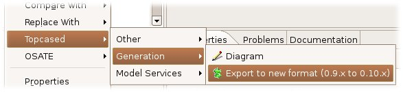
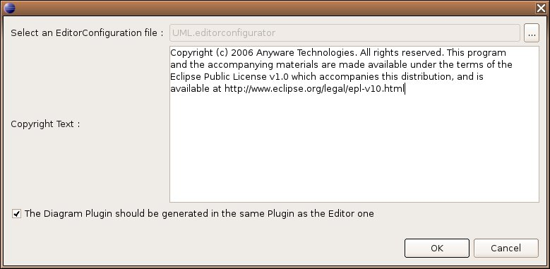

1. The EditorConfigurator file
There is no significant changes from the last version. You can open the file with the EMF tree structure editor. You will notice that a few properties have been added :
- Provider : the provider name ("Topcased" by default) that should be used in the generated plugin.xml file.
- CopyrightText : you can now define the copyright that should be included in the generated files.
2. The DiagramConfigurator file
There were a few changes that need to run manually an export action once, otherwise the file could not be open with the EMF tree structure editor.
Select the *.diagramconfigurator file that should be converted, then "Right Click > Topcased > Generation > Export to new format (0.9.x to 0.10.x)" :

Then, a dialog is prompted so that you can edit a few properties that have been added in the 0.10.x version :

The old file should be overwritten with the new one (same name and same extension). Here is a detailed listing of the new properties that have been added in the 0.10.x version
of the diagram configuration :
2.1. DiagramConfiguration
- Project Name : replaces the old "id" property, so this change is implicit for you. "ProjectName" was already used in the EditorConfigurator file.
- Editor Configurator : replaces the old "editorId" property that was a String value. Now this is a Reference to the EditorConfigurator file that is used.
- Provider : the provider name ("Topcased" by default) that should be used in the generated plugin.xml file.
- Copyright Text : you can now define the copyright that should be included in the generated files.
- Same Plugin As Editor : specify whether the diagram plugin should be generated in the same plugin as the editor plugin (you will then have to merge manually java files when needed).
2.2. PartConfiguration
- Constraint : this enables you to add Constraint on the model object that is to be created. It is very useful for example when you have a model object "A",
and depending on its property "p", its graphical representation and its behavior is not the same.
- Prefix : this is the prefix that is used to create the generated classes. Previously, generated classes were prefixed with the name of the model object that they
represents, but there were a limitation : you could not generate more than one graphical element that was linked with the same model object. Now, this is possible thanks
to this prefix, that is initialized with the model object name.
2.3. NodePartConfiguration
- AttachedToBorder : indicate whether the graphical representation of that element should be attached to the nearest border of its container. Previously it was
dependant on the figure that was used ("Port" mainly). Now, this is the property that is in charge of this behavior.
By Jacques LESCOT, Anyware Technologies
Sept, 11 2006